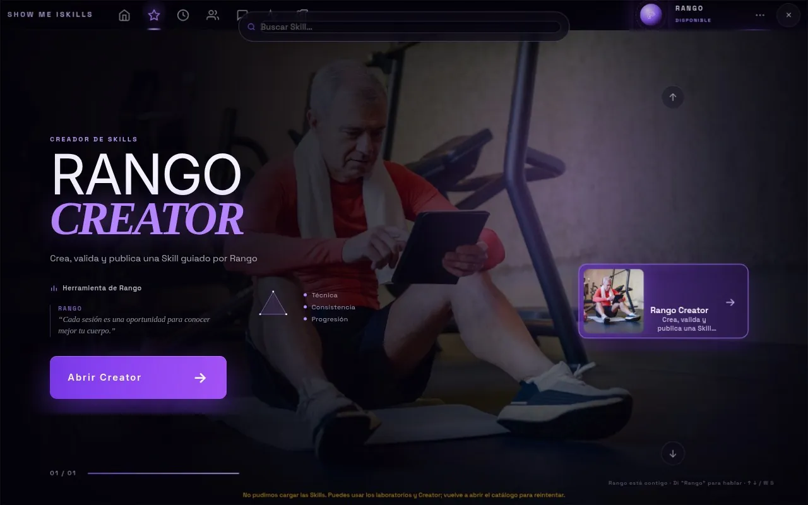

Skill Básquetbol
Tiro libre guiado con retroalimentación, referencia visual y progresión.
- Objetivo
- Construir una mecánica de tiro libre segura y consistente.
- Funciones utilizadas
Inicio / Producto / Skills
Actividades estructuradas con ejercicios, instrucciones, demostraciones, objetivos y reglas de seguimiento.
Tiro libre guiado con retroalimentación, referencia visual y progresión.
Entrenamiento guiado con seis enfoques funcionales y corrección de forma en tiempo real.
Elevación frontal y lateral de brazos con referencia técnica en 3D.
Elevación de rodilla con seguimiento por cámara del lado izquierdo y derecho.
Siete ejercicios iniciales para el hombro después de una cirugía o una lesión.
Progresión de nueve ejercicios: movilidad torácica, activación con liga y fuerza cargada.
Sesión vinculada a una evaluación revisada y a un plan profesional versionado.
Serie corta de movimientos: movilidad superior e inferior, sentadillas, equilibrio y coordinación.
Repite las mediciones de equilibrio, marcha y postura de la evaluación inicial.

Una herramienta guiada en diez pasos para crear, validar y publicar Skills nuevas. Una Skill solo se publica cuando tiene ejercicios, reglas observables, seguridad y métricas definidas.